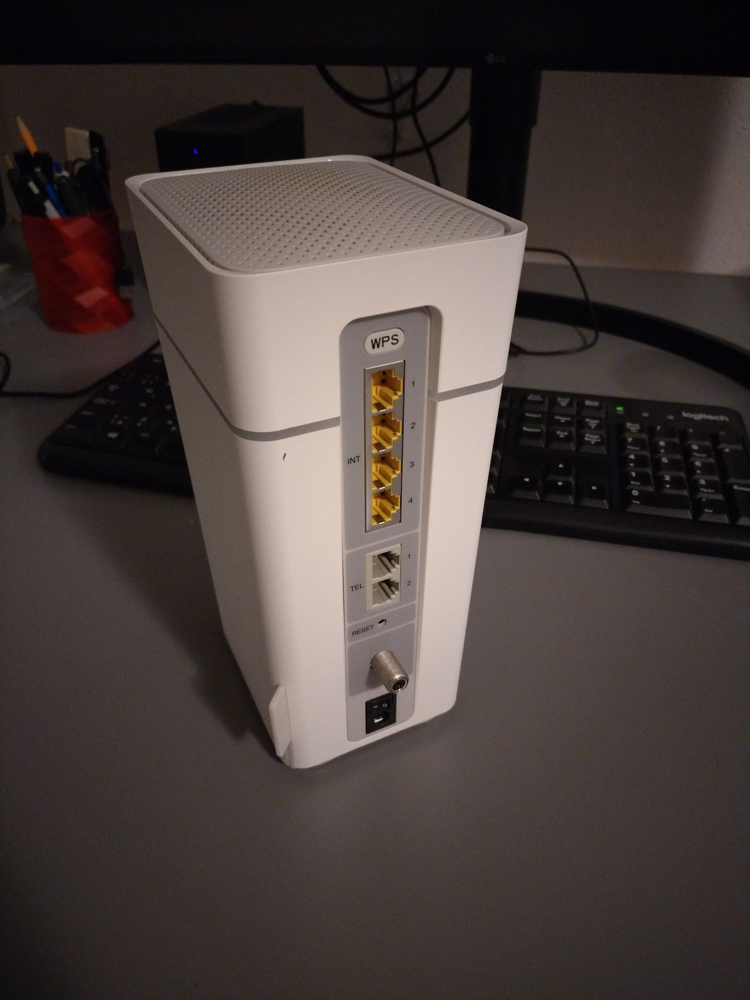

Networking is not a fun anymore, they said. Noone wants to do networking, they said.
Well, yes, IPv4 is obsolete and dull even without the great evil of all times - NAT.
But I am using IPv6 for fun and profit for years now, so everything is fine, right? Nope. IPv6 is stil a second class citizen for most
of the ISPs. Many software developers hardly understand the basics of networking and they make the apps working empirically and iteratively.
IPv6 is left broken in many cases because there is still supposed to be a fallback to IPv4 - "happy eyeballs".
And yes, v6 is indeed more complex in certain aspects.
Look at the prefix delegation: Is it necessary to run large access network? No, in most cases.
Does it promise more flexibility than static routes? Sure. And everybody is using it! Just join the bandwagon...
That brings me to THE MODEM. I got it from UPC/Sunrise few years ago when I got the service in the suburbs of Zurich. It is
in fact a heavily locked-down and branded version of Arris TG3492LG-LC.

On the receiving end is just a current Debian stable (bookworm) running on Turris Omnia (armhf) board. Nothing fancy. I configured
systemd-networkd with the following /etc/systemd/network/end2.network:
[Match]
Name=end2
[Network]
KeepConfiguration=yes
Address=192.168.1.2/24
Gateway=192.168.1.1
LinkLocalAddressing=ipv6
IPv6AcceptRA=yes
ConfigureWithoutCarrier=true
[IPv6AcceptRA]
DHCPv6Client=always
[DHCPv6]
PrefixDelegationHint=::/60
And I had corresponding config so I can use the delegated prefix on br0:
[Match]
Name=br0
[Network]
ConfigureWithoutCarrier=yes
LinkLocalAddressing=ipv6
Address=192.168.8.1/24
DHCPPrefixDelegation=yes
IPv6SendRA=yes
IPv6AcceptRA=no
[DHCPPrefixDelegation]
UplinkInterface=end2
SubnetId=0x0
Announce=yes
[IPv6SendRA]
EmitDNS=yes
DNS=2606:4700:4700::1111
DNS=2001:4860:4860::8888
Which worked to a certain extent. Sometimes (say that 1 in 2 or 3 tries succeeded so I got the delegated prefix on br0). But astonishingly I
was also randomly loosing the delegated prefix within 5-15 minutes after I obtained it. So I configured systemd-networkd
debugging in /etc/systemd/system/systemd-networkd.service.d/10-debug.conf :
[Service]
Environment=SYSTEMD_LOG_LEVEL=debug
Two observations in the log:
1) the T1 and T2 for the delegated prefix are unusually short (5 and 10 seconds).
2) It seems that the lost delegation is caused by a malformed message sent by the modem when the systemd-networkd misses the T2 renew
deadline and has to rebind the PD instead (see Feb 09 11:30:23).
Feb 09 11:29:05 slepice systemd-networkd[12922]: end2: Requesting NDisc route (configuring,configured): dst: 2a02:aa11:380:300::/57, src: n/a, gw: fe80::aef8:ccff:fe64:3975, prefsrc: n/a, scope: global, table: main(254), proto: ra, type: unicast, nexthop: 0, priority: 1024, flags: n/a
Feb 09 11:29:05 slepice systemd-networkd[12922]: end2: Route prefix is ::/0, ignoring
Feb 09 11:29:05 slepice systemd-networkd[12922]: end2: Setting SLAAC addresses and router.
Feb 09 11:29:05 slepice systemd-networkd[12922]: end2: DHCPv6 client: Timeout T1
Feb 09 11:29:05 slepice systemd-networkd[12922]: end2: DHCPv6 client: State changed: bound -> renew
Feb 09 11:29:05 slepice systemd-networkd[12922]: end2: Configuring NDisc route (requesting,configuring,configured): dst: n/a, src: n/a, gw: fe80::aef8:ccff:fe64:3975, prefsrc: n/a, scope: global, table: main(254), proto: ra, type: unicast, nexthop: 0, priority: 1024, flags: n/a
Feb 09 11:29:05 slepice systemd-networkd[12922]: end2: Configuring NDisc route (requesting,configuring,configured): dst: 2a02:aa11:380:300::/64, src: n/a, gw: n/a, prefsrc: n/a, scope: global, table: main(254), proto: ra, type: unicast, nexthop: 0, priority: 1024, flags: n/a
Feb 09 11:29:05 slepice systemd-networkd[12922]: end2: Configuring NDisc address (requesting,configured): 2a02:aa11:380:300:da58:d7ff:fe00:19f3/64 (valid for 1w 4d 11h 52min 40s, preferred for 4d 11h 52min 40s), flags: manage-temporary-address,no-prefixroute, scope: global
Feb 09 11:29:05 slepice systemd-networkd[12922]: end2: Configuring NDisc route (requesting,configuring,configured): dst: 2a02:aa11:380:300::/57, src: n/a, gw: fe80::aef8:ccff:fe64:3975, prefsrc: n/a, scope: global, table: main(254), proto: ra, type: unicast, nexthop: 0, priority: 1024, flags: n/a
Feb 09 11:29:05 slepice systemd-networkd[12922]: end2: DHCPv6 client: Sent Renew
Feb 09 11:29:05 slepice systemd-networkd[12922]: end2: DHCPv6 client: Next retransmission in 9s
Feb 09 11:29:05 slepice systemd-networkd[12922]: end2: ndisc_check_ready(): SLAAC addresses and routes are not set.
Feb 09 11:29:05 slepice systemd-networkd[12922]: end2: ndisc_check_ready(): SLAAC addresses and routes are not set.
Feb 09 11:29:05 slepice systemd-networkd[12922]: end2: Received updated NDisc address (configured): 2a02:aa11:380:300:da58:d7ff:fe00:19f3/64 (valid for 1w 4d 11h 52min 40s, preferred for 4d 11h 52min 40s), flags: manage-temporary-address,no-prefixroute, scope: global
Feb 09 11:29:05 slepice systemd-networkd[12922]: end2: ndisc_check_ready(): SLAAC addresses and routes are not set.
Feb 09 11:29:05 slepice systemd-networkd[12922]: end2: SLAAC addresses and routes set.
Feb 09 11:29:05 slepice systemd-networkd[12922]: end2: DHCPv6 client: Processed Reply message
Feb 09 11:29:05 slepice systemd-networkd[12922]: end2: DHCPv6 client: T1 expires in 4s
Feb 09 11:29:05 slepice systemd-networkd[12922]: end2: DHCPv6 client: T2 expires in 9s
Feb 09 11:29:05 slepice systemd-networkd[12922]: end2: DHCPv6 client: Valid lifetime expires in 3h
Feb 09 11:29:05 slepice systemd-networkd[12922]: end2: DHCPv6 client: State changed: renew -> bound
...
Feb 09 11:30:23 slepice systemd-networkd[12922]: end2: DHCPv6 client: Timeout T1
Feb 09 11:30:23 slepice systemd-networkd[12922]: end2: DHCPv6 client: State changed: bound -> renew
Feb 09 11:30:23 slepice systemd-networkd[12922]: end2: DHCPv6 client: Timeout T2
Feb 09 11:30:23 slepice systemd-networkd[12922]: end2: DHCPv6 client: State changed: renew -> rebind
Feb 09 11:30:23 slepice systemd-networkd[12922]: end2: DHCPv6 client: Sent Rebind
Feb 09 11:30:23 slepice systemd-networkd[12922]: end2: DHCPv6 client: Next retransmission in 9s
Feb 09 11:30:23 slepice systemd-networkd[12922]: end2: DHCPv6 client: Received an IA option without valid IA addresses or PD prefixes, ignoring.
Feb 09 11:30:23 slepice systemd-networkd[12922]: end2: DHCPv6 client: Failed to parse IA_PD option, ignoring: No data available
Feb 09 11:30:23 slepice systemd-networkd[12922]: end2: DHCPv6 client: Processed Reply message
Feb 09 11:30:23 slepice systemd-networkd[12922]: end2: DHCPv6 client: T1 expires in 2d 3h 25min 40s
Feb 09 11:30:23 slepice systemd-networkd[12922]: end2: DHCPv6 client: T2 expires in 3d 6h 17min 36s
Feb 09 11:30:23 slepice systemd-networkd[12922]: end2: DHCPv6 client: Valid lifetime expires in 4d 11h 52min 41s
Feb 09 11:30:23 slepice systemd-networkd[12922]: end2: DHCPv6 client: State changed: rebind -> bound
Feb 09 11:30:23 slepice systemd-networkd[12922]: end2: DHCPv6 address 2a02:aa11:380:300::d6f1/128 (valid for 4d 11h 52min 40s, preferred for 4d 11h 52min 40s)
Feb 09 11:30:23 slepice systemd-networkd[12922]: end2: Requesting DHCPv6 address (configured): 2a02:aa11:380:300::d6f1/128 (valid for 4d 11h 52min 40s, preferred for 4d 11h 52min 40s), flags: no-prefixroute, scope: global
Feb 09 11:30:23 slepice systemd-networkd[12922]: br0: Removing DHCP-PD address (configured): 2a02:aa11:380:310:ac58:60ff:fe6b:cd2e/64 (valid for 2h 59min 50s, preferred for 1h 59min 50s), flags: manage-temporary-address, scope: global
Feb 09 11:30:23 slepice systemd-networkd[12922]: Sent message type=signal sender=n/a destination=n/a path=/org/freedesktop/network1/link/_310 interface=org.freedesktop.DBus.Properties member=PropertiesChanged cookie=79 reply_cookie=0 signature=sa{sv}as error-name=n/a error-message=n/a
Feb 09 11:30:23 slepice systemd-networkd[12922]: Removing DHCPv6 route (configuring,configured): dst: 2a02:aa11:380:310::/60, src: n/a, gw: n/a, prefsrc: n/a, scope: global, table: main(254), proto: dhcp, type: unreachable, nexthop: 0, priority: 1024, flags: n/a
Feb 09 11:30:23 slepice systemd-networkd[12922]: end2: Setting DHCPv6 addresses and routes
Feb 09 11:30:23 slepice systemd-networkd[12922]: end2: Configuring DHCPv6 address (requesting,configured): 2a02:aa11:380:300::d6f1/128 (valid for 4d 11h 52min 40s, preferred for 4d 11h 52min 40s), flags: no-prefixroute, scope: global
Feb 09 11:30:23 slepice systemd-networkd[12922]: br0: Forgetting DHCP-PD address (n/a): 2a02:aa11:380:310:ac58:60ff:fe6b:cd2e/64 (valid for 2h 59min 49s, preferred for 1h 59min 49s), flags: manage-temporary-address, scope: global
Feb 09 11:30:23 slepice systemd-networkd[12922]: br0: Forgetting foreign route (n/a): dst: 2a02:aa11:380:310::/128, src: n/a, gw: n/a, prefsrc: n/a, scope: global, table: local(255), proto: kernel, type: anycast, nexthop: 0, priority: 0, flags: n/a
Feb 09 11:30:23 slepice systemd-networkd[12922]: br0: Forgetting foreign route (n/a): dst: 2a02:aa11:380:310:ac58:60ff:fe6b:cd2e/128, src: n/a, gw: n/a, prefsrc: n/a, scope: global, table: local(255), proto: kernel, type: local, nexthop: 0, priority: 0, flags: n/a
Feb 09 11:30:23 slepice systemd-networkd[12922]: Removed DHCPv6 route (configuring): dst: 2a02:aa11:380:310::/60, src: n/a, gw: n/a, prefsrc: n/a, scope: global, table: main(254), proto: dhcp, type: unreachable, nexthop: 0, priority: 1024, flags: n/a
Feb 09 11:30:23 slepice systemd-networkd[12922]: end2: Received updated DHCPv6 address (configured): 2a02:aa11:380:300::d6f1/128 (valid for 4d 11h 52min 40s, preferred for 4d 11h 52min 40s), flags: no-prefixroute, scope: global
Feb 09 11:30:23 slepice systemd-networkd[12922]: end2: DHCPv6 addresses and routes set.
Feb 09 11:30:23 slepice systemd-networkd[12922]: end2: NDISC: Received Router Advertisement: flags OTHER preference medium lifetime 1800 sec
Feb 09 11:30:23 slepice systemd-networkd[12922]: end2: NDISC: Invoking callback for 'router' event.
Feb 09 11:30:23 slepice systemd-networkd[12922]: end2: Acquiring DHCPv6 lease on NDisc request
Feb 09 11:30:23 slepice systemd-networkd[12922]: end2: Requesting NDisc route (configuring,configured): dst: n/a, src: n/a, gw: fe80::aef8:ccff:fe64:3975, prefsrc: n/a, scope: global, table: main(254), proto: ra, type: unicast, nexthop: 0, priority: 1024, flags: n/a
Feb 09 11:30:23 slepice systemd-networkd[12922]: end2: Requesting NDisc route (configuring,configured): dst: 2a02:aa11:380:300::/64, src: n/a, gw: n/a, prefsrc: n/a, scope: global, table: main(254), proto: ra, type: unicast, nexthop: 0, priority: 1024, flags: n/a
Feb 09 11:30:23 slepice systemd-networkd[12922]: end2: Requesting NDisc address (configured): 2a02:aa11:380:300:da58:d7ff:fe00:19f3/64 (valid for 1w 4d 11h 52min 40s, preferred for 4d 11h 52min 40s), flags: manage-temporary-address,no-prefixroute, scope: global
Feb 09 11:30:23 slepice systemd-networkd[12922]: end2: Requesting NDisc route (configuring,configured): dst: 2a02:aa11:380:300::/57, src: n/a, gw: fe80::aef8:ccff:fe64:3975, prefsrc: n/a, scope: global, table: main(254), proto: ra, type: unicast, nexthop: 0, priority: 1024, flags: n/a
Feb 09 11:30:23 slepice systemd-networkd[12922]: end2: Route prefix is ::/0, ignoring
Feb 09 11:30:23 slepice systemd-networkd[12922]: end2: Setting SLAAC addresses and router.
Feb 09 11:30:23 slepice systemd-networkd[12922]: end2: Configuring NDisc route (requesting,configuring,configured): dst: n/a, src: n/a, gw: fe80::aef8:ccff:fe64:3975, prefsrc: n/a, scope: global, table: main(254), proto: ra, type: unicast, nexthop: 0, priority: 1024, flags: n/a
Feb 09 11:30:23 slepice systemd-networkd[12922]: end2: Configuring NDisc route (requesting,configuring,configured): dst: 2a02:aa11:380:300::/64, src: n/a, gw: n/a, prefsrc: n/a, scope: global, table: main(254), proto: ra, type: unicast, nexthop: 0, priority: 1024, flags: n/a
Feb 09 11:30:23 slepice systemd-networkd[12922]: end2: Configuring NDisc address (requesting,configured): 2a02:aa11:380:300:da58:d7ff:fe00:19f3/64 (valid for 1w 4d 11h 52min 40s, preferred for 4d 11h 52min 40s), flags: manage-temporary-address,no-prefixroute, scope: global
Feb 09 11:30:23 slepice systemd-networkd[12922]: end2: Configuring NDisc route (requesting,configuring,configured): dst: 2a02:aa11:380:300::/57, src: n/a, gw: fe80::aef8:ccff:fe64:3975, prefsrc: n/a, scope: global, table: main(254), proto: ra, type: unicast, nexthop: 0, priority: 1024, flags: n/a
Feb 09 11:30:23 slepice systemd-networkd[12922]: end2: ndisc_check_ready(): SLAAC addresses and routes are not set.
Feb 09 11:30:23 slepice systemd-networkd[12922]: end2: ndisc_check_ready(): SLAAC addresses and routes are not set.
Feb 09 11:30:23 slepice systemd-networkd[12922]: end2: Received updated NDisc address (configured): 2a02:aa11:380:300:da58:d7ff:fe00:19f3/64 (valid for 1w 4d 11h 52min 40s, preferred for 4d 11h 52min 40s), flags: manage-temporary-address,no-prefixroute, scope: global
Feb 09 11:30:23 slepice systemd-networkd[12922]: end2: ndisc_check_ready(): SLAAC addresses and routes are not set.
Feb 09 11:30:23 slepice systemd-networkd[12922]: end2: SLAAC addresses and routes set.
Indeed, the conclusions from the logs were right. We can see the rebind failing with T1:0 T2:0 and no prefix. Funny part is that it succeeded
several times before it failed:
root@slepice:/home/th# tcpdump -i end2 -n ip6 and udp port 546 or udp port 547 -vvv
...
11:30:01.879154 IP6 (flowlabel 0x1639f, hlim 64, next-header UDP (17) payload length: 257) fe80::aef8:ccff:fe64:3975.547 > fe80::da58:d7ff:fe00:19f3.546: [udp sum ok] dhcp6 reply (xid=452c27 (IA_NA IAID:2885014782 T1:194180 T2:310688 (IA_ADDR 2a02:aa11:380:300::d6f1 pltime:388361 vltime:388361) (status-code Success)) (IA_PD IAID:2885014782 T1:5 T2:10 (IA_PD-prefix 2a02:aa11:380:310::/60 pltime:7200 vltime:10800) (status-code Success)) (server-ID hwaddr/time type 1 time 684092944 acf8cc643975) (client-ID vid 0000ab110ccd5bd4) (preference 255) (DNS-server 2001:730:3e82::12 2001:730:3e82::13))
11:30:07.881235 IP6 (flowlabel 0x3dcd2, hlim 1, next-header UDP (17) payload length: 166) fe80::da58:d7ff:fe00:19f3.546 > ff02::1:2.547: [bad udp cksum 0xc88a -> 0x3c2b!] dhcp6 renew (xid=2db0ca (server-ID hwaddr/time type 1 time 684092944 acf8cc643975) (IA_NA IAID:2885014782 T1:0 T2:0 (IA_ADDR 2a02:aa11:380:300::d6f1 pltime:0 vltime:0)) (IA_PD IAID:2885014782 T1:0 T2:0 (IA_PD-prefix 2a02:aa11:380:310::/60 pltime:0 vltime:0)) (Client-FQDN) (option-request DNS-server SNTP-servers NTP-server) (client-ID vid 0000ab110ccd5bd4) (elapsed-time 0))
11:30:07.883520 IP6 (flowlabel 0x1639f, hlim 64, next-header UDP (17) payload length: 257) fe80::aef8:ccff:fe64:3975.547 > fe80::da58:d7ff:fe00:19f3.546: [udp sum ok] dhcp6 reply (xid=2db0ca (IA_NA IAID:2885014782 T1:194180 T2:310688 (IA_ADDR 2a02:aa11:380:300::d6f1 pltime:388361 vltime:388361) (status-code Success)) (IA_PD IAID:2885014782 T1:5 T2:10 (IA_PD-prefix 2a02:aa11:380:310::/60 pltime:7200 vltime:10800) (status-code Success)) (server-ID hwaddr/time type 1 time 684092944 acf8cc643975) (client-ID vid 0000ab110ccd5bd4) (preference 255) (DNS-server 2001:730:3e82::12 2001:730:3e82::13))
11:30:13.653915 IP6 (flowlabel 0x3dcd2, hlim 1, next-header UDP (17) payload length: 166) fe80::da58:d7ff:fe00:19f3.546 > ff02::1:2.547: [bad udp cksum 0xc88a -> 0xb262!] dhcp6 renew (xid=b03a10 (server-ID hwaddr/time type 1 time 684092944 acf8cc643975) (IA_NA IAID:2885014782 T1:0 T2:0 (IA_ADDR 2a02:aa11:380:300::d6f1 pltime:0 vltime:0)) (IA_PD IAID:2885014782 T1:0 T2:0 (IA_PD-prefix 2a02:aa11:380:310::/60 pltime:0 vltime:0)) (Client-FQDN) (option-request DNS-server SNTP-servers NTP-server) (client-ID vid 0000ab110ccd5bd4) (elapsed-time 0))
11:30:13.658293 IP6 (flowlabel 0x1639f, hlim 64, next-header UDP (17) payload length: 257) fe80::aef8:ccff:fe64:3975.547 > fe80::da58:d7ff:fe00:19f3.546: [udp sum ok] dhcp6 reply (xid=b03a10 (IA_NA IAID:2885014782 T1:194180 T2:310688 (IA_ADDR 2a02:aa11:380:300::d6f1 pltime:388361 vltime:388361) (status-code Success)) (IA_PD IAID:2885014782 T1:5 T2:10 (IA_PD-prefix 2a02:aa11:380:310::/60 pltime:7200 vltime:10800) (status-code Success)) (server-ID hwaddr/time type 1 time 684092944 acf8cc643975) (client-ID vid 0000ab110ccd5bd4) (preference 255) (DNS-server 2001:730:3e82::12 2001:730:3e82::13))
11:30:23.655773 IP6 (flowlabel 0x3dcd2, hlim 1, next-header UDP (17) payload length: 148) fe80::da58:d7ff:fe00:19f3.546 > ff02::1:2.547: [bad udp cksum 0xc878 -> 0x6651!] dhcp6 rebind (xid=92cf1e (IA_NA IAID:2885014782 T1:0 T2:0 (IA_ADDR 2a02:aa11:380:300::d6f1 pltime:0 vltime:0)) (IA_PD IAID:2885014782 T1:0 T2:0 (IA_PD-prefix 2a02:aa11:380:310::/60 pltime:0 vltime:0)) (Client-FQDN) (option-request DNS-server SNTP-servers NTP-server) (client-ID vid 0000ab110ccd5bd4) (elapsed-time 0))
11:30:23.658037 IP6 (flowlabel 0x1639f, hlim 64, next-header UDP (17) payload length: 182) fe80::aef8:ccff:fe64:3975.547 > fe80::da58:d7ff:fe00:19f3.546: [udp sum ok] dhcp6 reply (xid=92cf1e (IA_NA IAID:2885014782 T1:194180 T2:310688 (IA_ADDR 2a02:aa11:380:300::d6f1 pltime:388361 vltime:388361) (status-code Success)) (IA_PD IAID:2885014782 T1:0 T2:0) (server-ID hwaddr/time type 1 time 684092944 acf8cc643975) (client-ID vid 0000ab110ccd5bd4) (preference 255) (DNS-server 2001:730:3e82::12 2001:730:3e82::13))
Even though I read the relevant RFCs I am not sure where the problem really is.
- I believe that the modem sets insane T1:5 T2:10. WDYT @sunrise.ch ? :-)
- I believe that the modem should stay consistent and the rebind should succeed.
- I think that
systemd-networkd shoud re-try to re-acquire the PD when it fails to get it. However it seems that at least with systemd 252 it is
not the case. I digged into current git master (257.3+) and I do not think that it has changed. This remains TODO to test and understand.
- Interestingly, PD is stable with
wide-dhcpv6-client and it seems that the router sends a bit longer T1 (like 17) as well as T2
and there are only renews and no rebinds (even after few hours running). But why? RFC says that DHCPv6 server must disregard any T1 nd T2 values
in the requests and that the client should set them to 0, which is what both systemd-networkd and wide-dhcpv6-client do.
Long story short: I feel so lonely. Sunrise must have shipped thousands maybe even tens of thousands of those modems. Am I the first one who tried this?
TBH I do not know if the T1 and T2 values are pushed to the modem from the DOCSIS network config or if there is an upper level DHCPv6 PD or where
the decission about the T1 and T2 values actually takes place. So could it be just a small misconfigured partition of the access network?